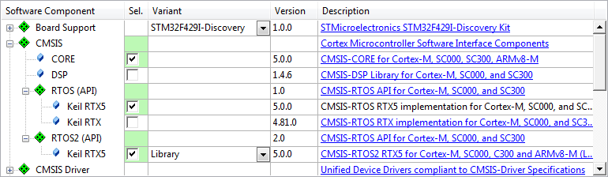

RTX5 supplies both API layers: CMSIS-RTOS v1 and CMSIS-RTOS v2. This allows a gradient transition from version 1 to 2. Depending on the phase a project is in its life cycly a level of migration is chosen.
- The first level of migration is to migrate to RTX5 without changing the API level.
- The second level in the transition is to use Version 2 API functions and Version 1 API functions in mixed variation.
- The third level is non-trivial and requires some additional development effort to migrate all API Version 1 calls to Version 2.
Level 1 Migration - Upgrade to RTX5 on API v1
The Upgrade to RTX Version 5 from any version 4.x is simple using the API v1 compatibility layer. To configure this in an existing project the following steps are required:

Component Selection for RTX5
- Open Manage Run-Time Environment window:
- Expand CMSIS Software Component.
- Expand RTOS (API) and deselect Keil RTX.
- Select Keil RTX5 from the RTOS (API) group.
- Resolve the missing components.
- Click OK.
- Expand CMSIS group in the Project window:
- Open RTX_Config.c and adapt configuration to suit the application including:
- System Configuration->Global Dynamic Memory size
- Kernel Tick Frequency
- Thread Configuration->Default Thread Stack size
- Details are found in Configure RTX v5
- Rename function int main (void) to void app_main (void *arg). Create new function int main (void) which implements at least:
- System initialization and configuration
- Update SystemCoreClock
- Initialize CMSIS-RTOS kernel
- Creates new thread app_main
- Start RTOS scheduler
Example - Application Main Thread
void app_main (void *arg) {
while (1) {
;
}
}
int main (void) {
Init_Hardware();
SystemCoreClockUpdate();
}
while(1);
}
- Note
- In RTOS API v1 all timings were specified in milliseconds. RTX5 defines all times in kernel ticks. To match both it is recommended to set the Kernel Tick Frequency to 1000Hz in the System Configuration.
To validate the correct operation of your RTOS after migration you can temporarily integrate the RTOS Validation component into your project.
Level 2 Migration - Use API v2 and v1 alongside in RTX5
Implementing new features in your project is ideally done using the new API. Both API versions are offered in RTX5 and can exist along-side.
The component selection is identical to Migration Level 1.
Include "cmsis_os2.h" in all modules where access to API v2 functions is required.
The following snippet shows how threads - created with both API versions - live along-side:
void phaseD (void *argument) {
for (;;) {
Switch_On (LED_D);
signal_func(tid_phaseA);
Switch_Off(LED_D);
}
}
void clock (void const *argument) {
for (;;) {
Switch_On (LED_CLK);
Switch_Off(LED_CLK);
}
}
void app_main (void *argument) {
;
tid_clock = osThreadCreate(osThread(clock), NULL);
while(1);
}
The full example "RTX5 Migration" is part of the CMSIS5 pack and available from the pack installer.
Level 3 Migration - Full transition to API v2
Migrating fully to APIv2 reduces the overhead of the translation layer and simplifies the project. There is some effort to replace and re-test all API Version 1 calls. The following steps are recommended as a rough guide-line:
- Open Manage Run-Time Environment window:
- Expand CMSIS Software Component:
- Expand RTOS (API) Software Component and de-select Keil RTX5
- Click OK
- Remove all occurances of
- Identify all references to the API v1 and replace with the appropriate calls in v2. You might want to use the Error List window in uVision to identify the related code passages quickly.
- Note
- See Detailed API Function Differences for details in differences.
Generally there are now longer os*Def macros to declare OS objects.
- Note
- Signal Events have been replaced. Use the functions listed under Thread Flags and Event Flags instead.
-
The Mail Queue RTOS v1 functions have been deprecated. Use the functionality of the Message Queue instead. Differences are listed under Message Queue.